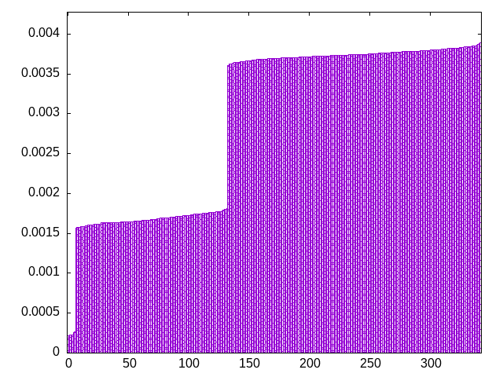
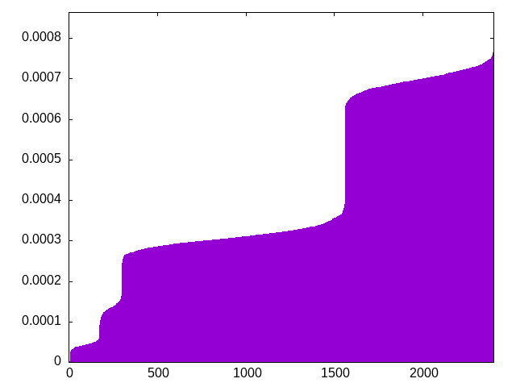
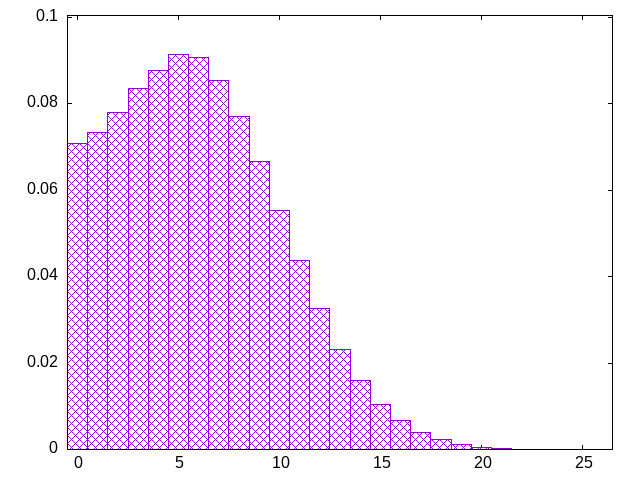

pieces are drawn from a bag (the window) which is refilled by a second bag -- window=4
zotjisolsjtltiizsjoztlizojoiszltslszjilottijjsostzzoiljtsizojliolstozslzijtiljostlijlszoztjzjliosstzitjjooslizziosllojtszjtlttiszjslozloititsljijtjozoilsozijllszojzttlssiijtojtzsollzstiizsooljtsizjzitlotzjsoiljijlsoztlotjiszojizsstlljzitslooiltjzjzilttjosoiolzjsstsliitzjzjsooljzioztitlzslsijztjolitsiozljsziotstllzjoisotstzjijozilltjljitozosiojtszlozslitslsjoztilsziottjjzjolsiislzjjzoitststolzjilsoizojstltzislljiojsijzotztljolotissiozlzstiojjlstiozjlzztsotljisjtiozzltoiijlolzstoljsjzstloztisjlotsijlzjszosiitzljlittsziooistjzlojtlojzsojisilttijlzoostijzszlztosjstiljioljozztlstolsjiositzzolzjlisjzsiittljozsitoltjsjzizlotijsjlloitszzljsioizotosljojtlzttsjislzitzjislositjzsljlooiojltiosztzsljtzijooztlsliisotsjoljtizjtizlzjzlstojszsoioltlitsijozzisotsjztiotllzjolsjzosijizosljitljtsiozijllzoissoztlsjtjzotsttliolitjzziotsziojjolsiljtzljlzissotioltsjjztisllzojitslosjozzitjzitoolslzstjtsziolijizjtolilssjzoijttlozszojlsositizjltitzsjzolslizojtjistostlzojiljilotzlsszjistjzlotiolziojsoztsijttljiozs
bagginess: 0.0423
bagginess6: 0.4364
distribution1_maxgap: 1.000000000001e-06
distribution2_maxgap: 0.011633011633011631
distribution3_maxgap: 0.001764003528007056
distribution4_maxgap: 0.00023500070500211508
diversity: 5.4
entropy: 11.244
evenness_diff: 5.801
evenness_same: 4.878
maxdrought: 25.0
maxflood: 4
peakdrought: 5.7
repchance: 0.0704
seq4_coverage: 0.9988
seq4_follow: 7.133
distribution3_graph:

distribution4_graph:

drought_graph:

similarity: (lower is more similar)
| 0.022 | wet2 |
| 0.030 | wet3_size12 |
| 0.042 | seamless_deep_pure |
| 0.045 | weight2 |
| 0.060 | weight_lin_pure |
| 0.066 | weight |
| 0.067 | bag2 |
| 0.087 | shift7 |
| 0.104 | balanced5 |
| 0.120 | deepbag_fixed7 |
| 0.150 | bag |
| 0.151 | bag_pure |
| 0.170 | shift3_5 |
| 0.215 | tgm |
| 0.228 | tgm_pure |
| 0.237 | wet_pure |
| 0.242 | seamless_bag2_pure |
| 0.262 | deepbag_window7 |
| 0.280 | shift10_5 |
| 0.280 | nes_pure |
| 0.284 | bag3 |
| 0.285 | balanced7 |
| 0.292 | deepbag_window10 |
| 0.294 | seamless_bag3_pure |
| 0.305 | deepbag_fixed4 |
| 0.308 | balanced9 |
| 0.317 | bag4 |
| 0.318 | shift14 |
| 0.325 | weight_exp |
| 0.328 | nes |
| 0.329 | deepbag_fixed10 |
| 0.342 | balanced_long_add_pure |
| 0.355 | wet |
| 0.367 | shift21 |
| 0.374 | balanced_long_mul_pure |
| 0.389 | tgm_tap_pure |
| 0.391 | tgm_tap |
| 0.397 | weight_exp_pure |
| 0.417 | wet3 |
| 0.456 | ti |
| 0.483 | seamless_bag_pure |
| 0.552 | fullrandom_pure |
| 0.570 | fullrandom |
| 0.576 | wet2_size100 |
| 2.273 | shift1_75 |
| 2.478 | repeat_recent_pure |
| 4.620 | repeat_last_pure |
| 8.198 | flatbag |
| 8.198 | flatbag_pure |